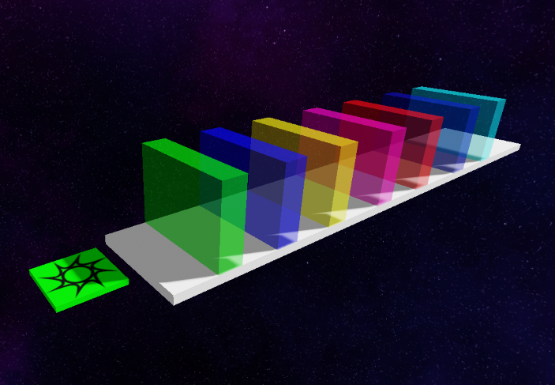

Завдання 2: Розчисти шлях! 🧊
Продовжуємо твоє Obby! Додай етап із напівпрозорими блоками, які перекривають дорогу. Крізь них видно наступну частину рівня, але пройти не виходить. Щоб рухатися далі, гравець має відсунути блоки мишкою!
🛠 Що потрібно зробити:
- 🏗️ Обери широку платформу на своєму Obby. Залиш місце, щоб відсувати блоки вбік.
- 🧱 Перекрий дорогу трьома високими блоками, які не вийде перестрибнути.
- 🧊 Зроби їх напівпрозорими: Transparency = 0.5. Галочку CanCollide залиш увімкненою ✅
- 🖱️ Додай DragDetector усередину кожного блока через плюс в Explorer.
- 🎮 Натисни Play! Затискай блоки мишкою, відсувай убік і проходь далі!
ПРОЗОРИЙ ≠ ПРОХІДНИЙ!
Transparency відповідає за видимість, а CanCollide — за зіткнення. Тому навіть напівпрозорий блок може зупинити гравця!
Transparency відповідає за видимість, а CanCollide — за зіткнення. Тому навіть напівпрозорий блок може зупинити гравця!
📸 Приклад етапу
Можеш обрати власні кольори й розміри. Головне — щоб перешкоди працювали!

🎮 Перевір себе: Знайди пару!
Зіграй у міні-гру та повтори властивості блоків. Коли завершиш, зроби скріншот результату.
Як здати домашнє завдання:
Надішли у наш спільний Telegram-чат:
📸 Скріншот нового етапу твого Obby з трьома напівпрозорими перешкодами.
🎮 Скріншот результату міні-гри.
🎥 За бажанням — коротке відео, як ти відсуваєш блоки й проходиш далі.
Надішли у наш спільний Telegram-чат:
📸 Скріншот нового етапу твого Obby з трьома напівпрозорими перешкодами.
🎮 Скріншот результату міні-гри.
🎥 За бажанням — коротке відео, як ти відсуваєш блоки й проходиш далі.